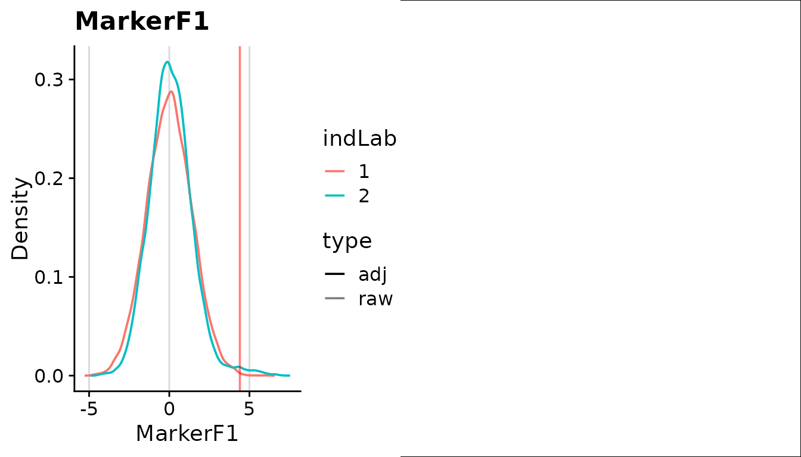

stimgate finds cells that may have responded to
stimulation. For each donor, it compares the stimulated samples with an
unstimulated sample from the same donor. This guide gates the example
data, reads the results and plots them.
1. Load the data
getExampleData() loads a small example dataset that
comes with the package: two donors, each with an unstimulated and a
stimulated sample, and two markers. It returns where the data are saved,
the marker names, and batchList, which groups each donor’s
samples.
library(stimgate)
exampleData <- getExampleData()
gs <- flowWorkspace::load_gs(exampleData$pathGs)
exampleData$batchList
#> [[1]]
#> [1] 1 2
#>
#> [[2]]
#> [1] 3 4
exampleData$marker
#> [1] "MarkerF1" "MarkerF2"Your own data
You can give gateStim() any of these:
- a GatingSet, flowSet, cytoset or flowFrame;
- FCS file paths, or a folder of FCS files;
- a list of numeric matrices or data frames, one per sample, with a column per channel;
- one data frame with a
samplecolumn saying which sample each cell is from.
Each element of batchList lists one donor’s samples, by
number or by name. The first sample is the unstimulated
one; the rest are that donor’s stimulated samples. Several
donors can share one unstimulated sample (it must be first in each), but
a stimulated sample can belong to only one donor.
getBatchList() can build batchList from a
table describing your samples.
samples <- list(uns = unsMatrix, stim = stimMatrix) # columns named by channel
batchList <- list(donor1 = c("uns", "stim"))StimGate does not transform your data (for example with arcsinh), so
give it values on the scale you want to gate. With matrices, the column
names are used as both channel and marker names. Only a GatingSet can
hold gated populations other than all cells ("root"). Use
the same data, in the same sample order, when you later call
plotStim() or writeStimFCS().
2. Find the gates
Give gateStim() a folder for its results and the markers
to gate. It saves everything in that folder and returns the folder’s
path. By default it uses all cells; set popGate to gate
within a population already in your GatingSet.
pathProject <- gateStim(
pathProject = tempfile("stimgate_"),
.data = gs,
batchList = exampleData$batchList,
marker = exampleData$marker
)To pick channels by channel name instead, use chnl
instead of marker. The defaults suit most data; see
?stimControl for the settings you can change, and
?gateStim for setting them separately for each marker.
3. Read the gates and statistics
getStimGates() gives the gates for each stimulated
sample (ind) and marker. gate is the gate
value. gateCyt is the gate used for cells already positive
for another cytokine; it can be lower than gate.
gates <- getStimGates(pathProject)
head(gates)
#> # A tibble: 4 × 12
#> pop gateName chnl marker ind batch gate locGenerated locGeneratedDirect
#> <chr> <chr> <chr> <I<ch> <chr> <chr> <dbl> <lgl> <lgl>
#> 1 root loc_minC… BC1(… Marke… 2 batc… 4.65 TRUE TRUE
#> 2 root loc_minC… BC1(… Marke… 4 batc… 3.91 TRUE TRUE
#> 3 root loc_minC… BC2(… Marke… 2 batc… 4.11 TRUE TRUE
#> 4 root loc_minC… BC2(… Marke… 4 batc… 3.00 TRUE TRUE
#> # ℹ 3 more variables: locSource <chr>, locReason <chr>, gateCyt <dbl>getStimStats() gives, for each stimulated sample
(ind), the number and percentage of cells positive for each
combination of markers (cytCombn), in the stimulated sample
and in its unstimulated sample. freqBs is the stimulated
percentage minus the unstimulated percentage: the response after
removing background.
stats <- getStimStats(pathProject)
head(stats[, c("ind", "cytCombn", "countStim", "freqStim", "freqUns", "freqBs")])
#> # A tibble: 6 × 6
#> ind cytCombn countStim freqStim freqUns freqBs
#> <chr> <chr> <int> <dbl> <dbl> <dbl>
#> 1 2 BC1(La139)Dd~+~BC2(Pr141)Dd~-~ 39 0.39 0.03 0.36
#> 2 2 BC1(La139)Dd~-~BC2(Pr141)Dd~+~ 262 2.62 0.62 2
#> 3 2 BC1(La139)Dd~+~BC2(Pr141)Dd~+~ 40 0.4 0.01 0.39
#> 4 2 BC1(La139)Dd~-~BC2(Pr141)Dd~-~ 9659 96.6 99.3 -2.75
#> 5 4 BC1(La139)Dd~+~BC2(Pr141)Dd~-~ 92 0.92 0.23 0.69
#> 6 4 BC1(La139)Dd~-~BC2(Pr141)Dd~+~ 483 4.83 1.12 3.714. Plot the results
Plot the first donor’s samples to compare unstimulated and stimulated
expression, with the gate drawn on. One marker gives density curves; two
markers also give two-dimensional plots, which need the
hexbin package.
plotStim(
ind = exampleData$batchList[[1]], .data = gs,
pathProject = pathProject, marker = exampleData$marker[1]
)
The results stay in pathProject, so you can read them
again in a later R session. To see more detail on how each gate was
chosen, see ?getStimGatesDetailed. To save the positive
cells as FCS files, see ?writeStimFCS.
Session information
sessionInfo()
#> R version 4.6.1 (2026-06-24)
#> Platform: x86_64-pc-linux-gnu
#> Running under: Ubuntu 24.04.5 LTS
#>
#> Matrix products: default
#> BLAS: /usr/lib/x86_64-linux-gnu/openblas-pthread/libblas.so.3
#> LAPACK: /usr/lib/x86_64-linux-gnu/openblas-pthread/libopenblasp-r0.3.26.so; LAPACK version 3.12.0
#>
#> locale:
#> [1] LC_CTYPE=C.UTF-8 LC_NUMERIC=C LC_TIME=C.UTF-8
#> [4] LC_COLLATE=C.UTF-8 LC_MONETARY=C.UTF-8 LC_MESSAGES=C.UTF-8
#> [7] LC_PAPER=C.UTF-8 LC_NAME=C LC_ADDRESS=C
#> [10] LC_TELEPHONE=C LC_MEASUREMENT=C.UTF-8 LC_IDENTIFICATION=C
#>
#> time zone: UTC
#> tzcode source: system (glibc)
#>
#> attached base packages:
#> [1] stats graphics grDevices utils datasets methods base
#>
#> other attached packages:
#> [1] stimgate_0.99.25
#>
#> loaded via a namespace (and not attached):
#> [1] utf8_1.2.6 tidyr_1.3.2 sass_0.4.10
#> [4] generics_0.1.4 lattice_0.22-9 digest_0.6.39
#> [7] magrittr_2.0.5 evaluate_1.0.5 grid_4.6.1
#> [10] RColorBrewer_1.1-3 fastmap_1.2.0 Matrix_1.7-5
#> [13] jsonlite_2.0.0 graph_1.90.0 BiocManager_1.30.27
#> [16] mgcv_1.9-4 purrr_1.2.2 flowWorkspace_4.24.0
#> [19] scales_1.4.0 XML_3.99-0.25 Rgraphviz_2.56.0
#> [22] textshaping_1.0.5 jquerylib_0.1.4 cli_3.6.6
#> [25] rlang_1.3.0 RProtoBufLib_2.24.0 Biobase_2.72.0
#> [28] cowplot_1.2.0 splines_4.6.1 scam_1.2-22
#> [31] withr_3.0.3 cachem_1.1.0 yaml_2.3.12
#> [34] otel_0.2.0 cytolib_2.24.0 tools_4.6.1
#> [37] ncdfFlow_2.58.0 dplyr_1.2.1 ggplot2_4.0.3
#> [40] BiocGenerics_0.58.1 vctrs_0.7.3 R6_2.6.1
#> [43] matrixStats_1.5.0 stats4_4.6.1 lifecycle_1.0.5
#> [46] S4Vectors_0.50.3 fs_2.1.0 flowCore_2.24.0
#> [49] htmlwidgets_1.6.4 ragg_1.5.2 pkgconfig_2.0.3
#> [52] desc_1.4.3 pkgdown_2.2.1 pillar_1.11.1
#> [55] bslib_0.12.0 gtable_0.3.6 glue_1.8.1
#> [58] data.table_1.18.6.1 systemfonts_1.3.2 xfun_0.61
#> [61] tibble_3.3.1 tidyselect_1.2.1 knitr_1.52
#> [64] farver_2.1.2 nlme_3.1-169 htmltools_0.5.9
#> [67] labeling_0.4.3 rmarkdown_2.32 compiler_4.6.1
#> [70] S7_0.2.2